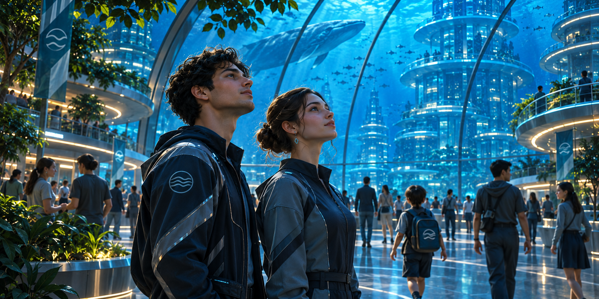

• El español como forma de expresarse

El idioma oficial de Bermudia es el español, aunque no siempre fue así. Durante siglos, sus habitantes utilizaron una lengua ancestral conocida como bermudiano, que formaba parte de su identidad cultural y se transmitía de generación en generación. Sin embargo, durante el período de expansión colonial española por el Caribe, Bermudia fue descubierta por exploradores que establecieron contacto con sus habitantes. Con el tiempo, la Corona española buscó extender su influencia política y cultural sobre la ciudad submarina, imponiendo el castellano como lengua de la administración, la educación y las relaciones comerciales. Esta transformación provocó numerosos conflictos entre quienes defendían la lengua originaria y quienes consideraban que adoptar el español facilitaría las relaciones con el mundo exterior. Finalmente, tras un prolongado período de dominación extranjera, el español se consolidó como idioma oficial. En la actualidad, aunque la mayoría de los ciudadanos habla español, el antiguo bermudiano todavía se conserva en algunas expresiones populares, ceremonias tradicionales y documentos históricos, como símbolo de resistencia e identidad cultural.
• ¿Qué caracteriza a un ciudadano de Bermudia?

Personalidad
Si tenes pensado visitar esta hermosa ciudad tené la seguridad de que los habitantes de Bermudia son agradables y hospitalarios con cualquier habitante proveniente de la superficie. El respeto por la naturaleza es uno de sus grades valores. Desde niños aprenden la importancia de preservar el ecosistema marino y mantener una relación pacífica con las demás especies del mar.
Caracteristicas físicas
En cuanto a lo físico, a simple vista un bermudiano podría darte la impresión de ser idéntico a un humano promedio terrestre, pero la realidad y la historia revela una historia fascinante que nos remonta a otro siglo. A principios de inaugurada la ciudad en el siglo XVII los ciudadanos requerían de un equipamiento especial con el propósito de permancer en Bermudia sin padecer consecuencias de índole salubre. Afortunadamente con el pasar de los años y a modo de adaptación, los ciudadanos fueron capaces de desarrollar biologicamente branquias funcionales, así como la tendencia de desplazarse habilidosamente por el agua, tal como lo haría un animal marino.
• Nuestras costumbres